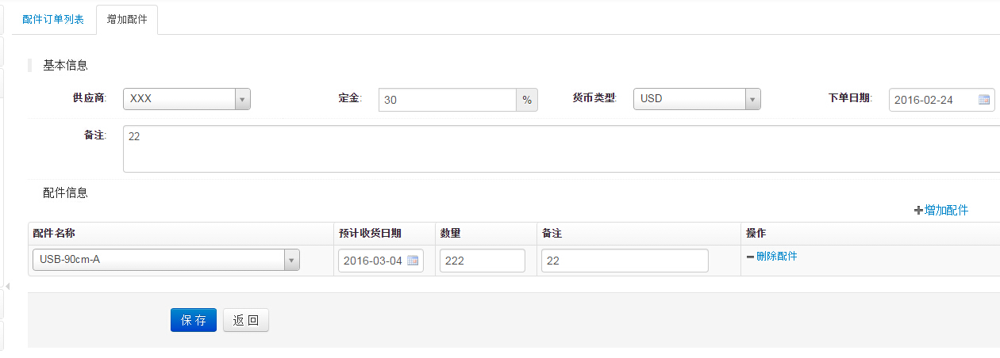

配件订单管理
1、配件订单列表页面,如下图
- 如图该页面可以对配件订单进行：手动新建、审核、确认、取消、新建收货单等的操作
- 一般情况下是不用这里的新建配件订单，直接在相应的产品订单里点击“配件下单”进行配件下单，只有需要额外下单时才用到这里的新建
- 额外新建的配件定单，在该订单没付款前，可对未收货的产品数量进行修改
- 选中要收货的配件订单，点击收货进入"配件收货单新建"页面
2、额外新建配件订单页面,如下图

- 额外新建配件订单如上图
3、从采购订单新建配件订单页面,如下图
- 上图，只能填写下单数，如果PO可用、库存可用里面有数值，可以直接转移需要的数量
- PO可用：原来下的配件订单多出来的部分、并且该订单没有收货
- PO冻结：产品订单需要的配件数
- 库存可用：来自PO可用的收货
- 库存冻结：已经收了货的PO冻结
- 配件配送后，库存冻结会减少
4、配件订单确认页面,如下图
- 如上图，该功能可以对配件的价格进行编辑，系统会根据配件录入的价格进行自动填充，订单确认人可以与订单PI价格比较后，进行再次编辑价格
- 确认后订单进入"生产"状态